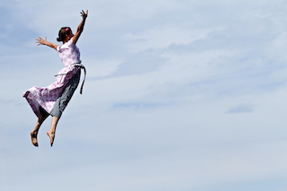
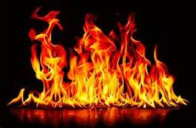
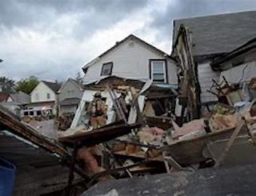

Bienvenue à toutes et à tous 🎆,
je suis Mayssane Lahjomri, la créatrice de la start-up du futur! Mon cabinet d'analyse de rêve vous permettra de mieux comprendre vos rêves. Vous trouverez ici des articles sur les rêves les plus communs.N'hésitez pas à me contacter pour des consulations privées!
Mais avant tout, qu'est ce qu'un rêve?😴Voler!
Rêver devoler est souvent lié à la liberté en raison d'un sentiment de liberté ou parce qu'on se sent détaché. Cependant, selon les experts de Healthline, si l'avion s'accompagne d'un sentiment d'anxiété, cela peut signifier que vous cherchez à vous évader de quelque chose dans la vie.
✈️ La présence de l'eau
L'eau, selon Lowenberg, peut se référer à différentes émotions et dépend de la forme qu'elle prend. Si c'est une eau boueuse, elle peut représenter quelque chose de négatif, tandis que la clarté peut signifier la paix. D'autre part, le rêve de la noyade peut représenter une frustration ou un sentiment d'être piégé.
🏝La présence du feu
Selon M. Lowenberg, cela peut représenter de la colère ou de l'anxiété, mais cela peut aussi signifier des changements. Le rêve de s'enflammer est bien sûr aussi lié à des sentiments négatifs, liés aussi au fait d'être enfermé ou piégé sans possibilité de s'échapper.
🔥 Voir une maison qui s'effondre
L'eau, selon Lowenberg, peut se référer à différentes émotions et dépend de la forme qu'elle prend. Si c'est une eau boueuse, elle peut représenter quelque chose de négatif, tandis que la clarté peut signifier la paix. D'autre part, le rêve de la noyade peut représenter une frustration ou un sentiment d'être piégé.
🏚 Être nu en public
Un rêve qui semble transcender les frontières et se retrouve dans différentes cultures. Les experts soulignent que cela peut être dû au fait que quelque chose dans notre vie nous a laissés exposés ou vulnérables. M. Lowenberg, en revanche, affirme que cela pourrait être dû à une anxiété sociale ou à une inquiétude sur la façon dont nous sommes perçus. Parce qu'être nu est souvent une forme d'exposition ou d'humiliation dans différentes cultures, c'est un élément commun aux rêves.
😳